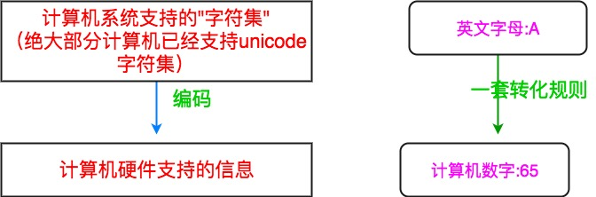
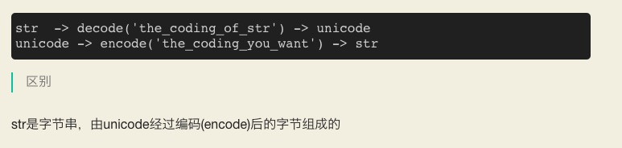
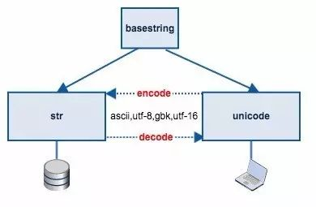
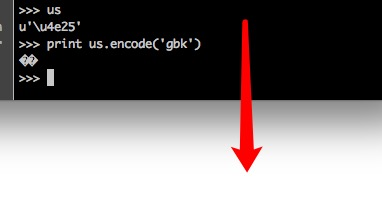

概述
- 本篇用于梳理字符集和编码知识
1.基础知识
计算机中储存的信息都是用二进制数表示的；而我们在屏幕上看到的英文、汉字等字符是二进制数转换之后的结果。通俗的说，按照何种规则将字符存储在计算机中，如'a'用什么表示，称为"编码"；反之，将存储在计算机中的二进制数解析显示出来，称为"解码"，如同密码学中的加密和解密。在解码过程中，如果使用了错误的解码规则，则导致'a'解析成'b'或者乱码。
字符集（Charset）：
是一个系统支持的所有抽象字符的集合。字符是各种文字和符号的总称，包括各国家文字、标点符号、图形符号、数字等。
字符编码（Character Encoding）：
是一套法则，使用该法则能够对自然语言的字符的一个集合（如字母表或音节表），与其他东西的一个集合（如号码或电脉冲）进行配对。即在符号集合与数字系统之间建立对应关系，它是信息处理的一项基本技术。通常人们用符号集合（一般情况下就是文字）来表达信息。而以计算机为基础的信息处理系统则是利用元件（硬件）不同状态的组合来存储和处理信息的。元件不同状态的组合能代表数字系统的数字，因此字符编码就是将符号转换为计算机可以接受的数字系统的数，称为数字代码。

2. 常用字符集和字符编码
常见字符集名称：
- 比如: ASCII字符集、GB2312字符集、BIG5字符集、GB18030字符集、Unicode字符集等。
- 计算机要准确的处理各种字符集文字，需要进行字符编码，以便计算机能够识别和存储各种文字。
字符集和字符编码一般都是成对出现的，如ASCII、IOS-8859-1、GB2312、GBK，都是即表示了字符集又表示了对应的字符编码，以后统称为编码。Unicode比较特殊，后面细说。
中文编码方式的集合范围
因此，就我们关心的汉字而言，三种编码方式的表示范围是：
GB18030 > GBK > GB2312
即GBK是GB2312的超集，GB1803又是GBK的超集。后面也会看到，一个汉字可以用GBK表示，但不一定能被GB2312所表示
3. 单独说Unicode
- 当计算机传到世界各个国家时，为了适合当地语言和字符，设计和实现类似GB232/GBK/GB18030/BIG5的编码方案。这样各搞一套，在本地使用没有问题，一旦出现在网络中，由于不兼容，互相访问就出现了乱码现象。
- 为了解决这个问题，一个伟大的创想产生了——
Unicode。Unicode编码系统为表达任意语言的任意字符而设计。它使用4字节的数字来表达每个字母、符号，或者表意文字(ideograph)。每个数字代表唯一的至少在某种语言中使用的符号。（并不是所有的数字都用上了，但是总数已经超过了65535，所以2个字节的数字是不够用的。）被几种语言共用的字符通常使用相同的数字来编码，除非存在一个在理的语源学(etymological)理由使不这样做。不考虑这种情况的话，每个字符对应一个数字，每个数字对应一个字符。即不存在二义性。不再需要记录"模式"了。U+0041总是代表'A'，即使这种语言没有'A'这个字符。 -
在计算机科学领域中，
Unicode（统一码、万国码、单一码、标准万国码）是业界的一种标准，它可以使电脑得以体现世界上数十种文字的系统。Unicode 是基于通用字符集（Universal Character Set）的标准来发展，并且同时也以书本的形式对外发表。 -
Unicode 还不断在扩增， 每个新版本插入更多新的字符。直至目前为止的第六版，Unicode 就已经包含了超过十万个字符（在2005年，Unicode 的第十万个字符被采纳且认可成为标准之一）、一组可用以作为视觉参考的代码图表、一套编码方法与一组标准字符编码、一套包含了上标字、下标字等字符特性的枚举等。
- Unicode 组织（The Unicode Consortium）是由一个非营利性的机构所运作，并主导 Unicode 的后续发展，其目标在于：将既有的字符编码方案以Unicode 编码方案来加以取代，特别是既有的方案在多语环境下，皆仅有有限的空间以及不兼容的问题。
-（可以这样理解：Unicode是字符集，UTF-32/ UTF-16/ UTF-8是三种字符编码方案。）
4. Linux下文件名编码转换 和 文件内容编码转换
- 文件名编码转换 使用
convmv - 文件内容编码转换 使用
iconv
原因在于，Windows 的文件名中文编码默认为GBK，压缩或者上传后，文件名还会是GBK编码，而Linux中默认文件名编码为UTF8，由于编码不一致所以导致了文件名乱码的问题，解决这个问题需要对文件名进行转码。
yum install convmv
convmv -f gbk -t utf-8 -r --notest /home/wwwroot
5. python字符集和编码
unicode类型，是操作系统层面真正的字符串str类型是字节串一个序列对象，是一个二进制对象- 一个unicode对象,调用encode(
utf-8) 方法， 才会变成str对象 - 一个str对象，调用decode(
utf-8)方法，才会变成unicode对象

我们要把 unicode 符号保存到文件或者传输到网络就需要经过编码处理转换成 str 类型，于是 python 提供了 encode 方法，从 unicode 转换到 str，反之亦然。


5.1 为什么python 源文件开头要加
#-*- coding: utf-8 -*-
- 因为python是要先编译，再执行的，编译过程中，python解析器默认的编码方式是ASCII，如果源文件里有中文，编码就会报错，导致python解析器无法完成编译过程，因而报错退出
5.2 不同终端导致的编码差异
- 同样一个汉字，同样是str类型，在不同终端下敲入，其存储形式是不一样的。
- 比如终端编码是gbk，那么该str其二进制形式 就是gbk的编码
-
比如终端编码是utf-8，那么该str其二进制形式就是utf-8的编码
-
当然，如果输入的是unicode字符，那么其存储的始终是unicode编码， 但是问题是如果你的终端是GBK编码，就不好输入unicode字符了
- 当该str调用unicode(str)时，相当于把str对象进行decode，如果编码方式选择不对，
-
- 比如一个gbk编码的str，decode()时（也就是调用unicode(str)时），方式为utf-8，就会出现unicodedecodeerror
-
- unicode()函数，支持传入解码方式(比如gbk或者utf-8)，如果不传入，默认就是使用sys.getdefaultencoding(),python2里，默认是ascii
5.3 python2 print全过程： 核心路径
-
unicode对象或者str对象—>解析成其对应的二进制序列—>使用终端对应的解码方式来解码 -
终端对应的解码方式是啥呢 ？ locale.getdefaultlocale()

- 这里为什么会显示乱码呢 ？
-
- 首先us是一个unicode对象，us.encode(‘gbk’)会转化成str对象，
-
- 然后print该str对象时，会通过终端的编码方式设置来解码，这里终端的编码方式为utf-8，就会报错
-
- 终端的编码方式如果是gbk，就不会报错
print过程其实就是把内存里的字符串转为二进制序列，然后再把二进制序列解码、在屏幕上显示.
5.4 python3的字符串
- Python 把字符串的类型还搞成两种，unicode 和 str ，以至于把开发者都弄糊涂了，这是其二。python3 就彻底把 字符串重新改造了，只保留一种类型